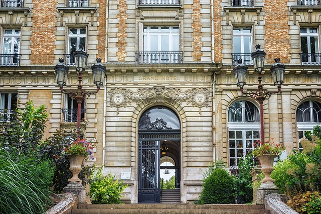
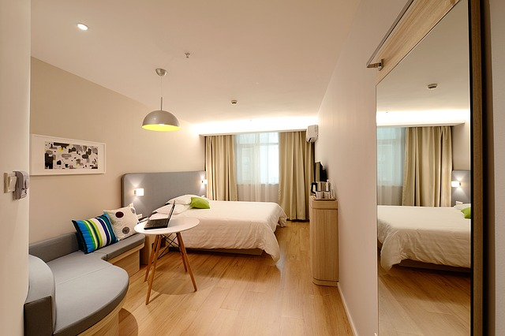
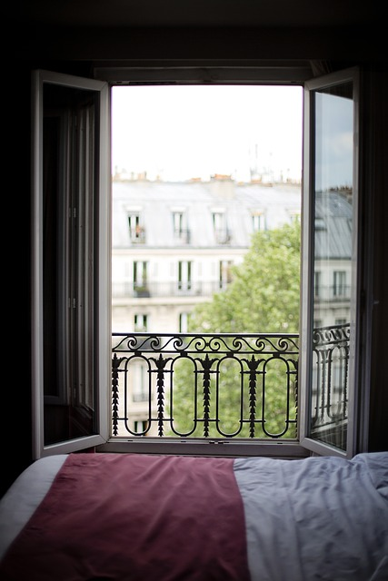

Bienvenue à Paris
Five Star
Victoria Palace Hotel This hotel offers only the highest level of accommodations and personal services. The hotels feature up to three restaurants all with exquisite menus. Room service is usually available 24 hours a day. Fitness Centers and valet and/or garage parking are typically available. A concierge is also available to assist you.
How to get here: Valet pickup from the airport
Three Star
Le Relais Saint-Honore This hotel is located near a major expressway and is convenient to shopping and moderate to high priced attractions. It also features a medium-sized restaurant that offers breakfast through dinner. Room service availability may vary. Valet parking, fitness centers and pools are included.
How to get here: By train RER line C
Two Star
Hotel Du Champ De Mars Hotel Du Champ De Mars is a smaller hotel managed by the proprietor. It is 4 stories high and has a more personal atmosphere. Furnishings and facilities are clean but basic. It does not have a restaurant on site but is usually within walking distance to some good low-priced dining. Public access, past certain hours, may be restricted.
How to get here: By train RER line C